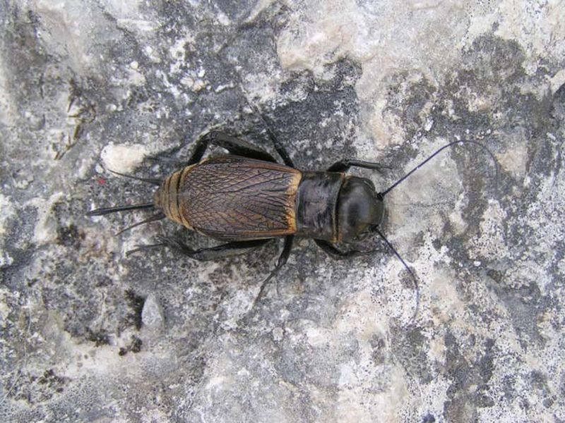

Feldgrille
Gryllus campestris
Die Trockenheit und Wärme liebende Feldgrille ist mittlerweile auch auf entwässerten Riedwiesen heimisch geworden. Sie gräbt bis zu 40 cm tiefe Gänge und lebt dort als „Single" von pflanzensprossen und Insekten. Zur Paarungszeit vernehmen wir das charakteristische Zirpen der Männchen; die damit um die Gunst der Weibchen buhlen.